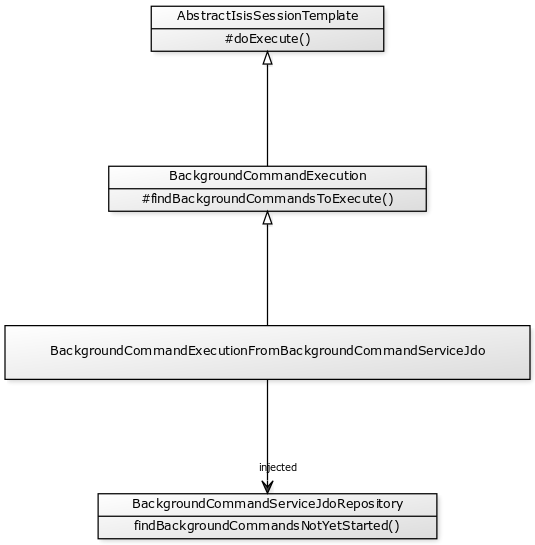

public interface TranslationService {
public String translate( (1)
final String context,
final String text);
public String translate( (2)
final String context,
final String singularText,
final String pluralText,
final int num);
public enum Mode {
READ,
WRITE;
}
Mode getMode(); (3)
}
Beyond the Basics
1. Beyond the Basics
This guide provides more advanced guidance on writing maintainable larger applications.
Later chapters discuss how to deploy your app, and discuss other ways in which you can extend or adapt the framework itself to your particular needs.
1.1. Other Guides
Apache Isis documentation is broken out into a number of user, reference and "supporting procedures" guides.
The user guides available are:
The reference guides are:
The remaining guides are:
-
Developers' Guide (how to set up a development environment for Apache Isis and contribute back to the project)
-
Committers' Guide (release procedures and related practices)
2. i18n
Apache Isis' support for internationlization (i18n) allows every element of the domain model (the class names, property names, action names, parameter names and so forth) to be translated.
It also supports translations of messages raised imperatively, by which we mean as the result of a call to title() to obtain an object’s title, or messages resulting from any business rule violations (eg disable…() or validate…(), and so on.
The Wicket viewer (that is, its labels and messages) is also internationalized using the same mechanism. If no translations are available, then the Wicket viewer falls back to using Wicket resource bundles.
Isis does not translate the values of your domain objects, though. So, if you have a domain concept such as Country whose name is intended to be localized according to the current user, you will need to model this yourself.
2.1. Implementation Approach
Most Java frameworks tackle i18n by using Java’s own ResourceBundle API. However, there are some serious drawbacks in this approach, including:
-
if a string appears more than once (eg "name" or "description") then it must be translated everywhere it appears in every resource bundle file
-
there is no support for plural forms (see this SO answer)
-
there is no tooling support for translators
Apache Isis therefore takes a different approach, drawing inspiration from GNU’s gettext API and specifically its .pot and .po files. These are intended to be used as follows:
-
the
.pot(portable object template) file holds the message text to be translated -
this file is translated into multiple
.po(portable object) files, one per supported locale -
these
.pofiles are renamed according to their locale, and placed into the 'appropriate' location to be picked up by the runtime. The name of each.poresolved in a very similar way to resource bundles.
The format of the .pot and .po files is identical; the only difference is that the .po file has translations for each of the message strings. These message strings can also have singular and plural forms.
|
Although Apache Isis' implementation is modelled after GNU’s API, it does not use any GNU software. This is for two reasons: (a) to simplify the toolchain/developer experience, and (b) because GNU software is usually GPL, which would be incompatible with the Apache license. |
This design tackles all the issues of ResourceBundles:
-
the
.pomessage format is such that any given message text to translate need only be translated once, even if it appears in multiple places in the application (eg "Name") -
the
.pomessage format includes translations for (optional) plural form as well as singular form -
there are lots of freely available editors to be found, many summarized on this Drupal.org webpage.
In fact, there are also online communities/platforms of translators to assist with translating files. One such is crowdin (nb: this link does not imply endorsement).
In Apache Isis' implementation, if the translation is missing from the .po file then the original message text from the .pot file will be returned. In fact, it isn’t even necessary for there to be any .po files; .po translations can be added piecemeal as the need arises.
2.2. TranslationService
The cornerstone of Apache Isis' support for i18n is the TranslationService service. This is defined in the applib with the following API:
| 1 | is to translate the singular form of the text |
| 2 | is to translate the plural form of the text |
| 3 | indicates whether the translation service is in read or write mode. |
The translate(…) methods are closely modelled on GNU’s gettext API. The first version is used when no translation is required, the second is when both a singular and plural form will be required, with the num parameter being used to select which is returned. In both cases the context parameter provides some contextual information for the translator; this generally corresponds to the class member.
The mode meanwhile determines the behaviour of the service. More on this below.
2.2.1. TranslationServicePo
Isis provides a default implementation of TranslationService, namely TranslationServicePo.
If the service is running in the normal read mode, then it simply provides translations for the locale of the current user. This means locates the appropriate .po file (based on the requesting user’s locale), finds the translation and returns it.
If however the service is configured to run in write mode, then it instead records the fact that the message was requested to be translated (a little like a spy/mock in unit testing mock), and returns the original message. The service can then be queried to discover which messages need to be translated. All requested translations are written into the .pot file.
To make the service as convenient as possible to use, the service configures itself as follows:
-
if running in prototype mode deployment type or during integration tests, then the service runs in write mode, in which case it records all translations into the
.potfile. The.potfile is written out when the system is shutdown. -
if running in server (production) mode deployment type, then the service runs in read mode. It is also possible to set a configuration setting in
isis.propertiesto force read mode even if running in prototype mode (useful to manually test/demo the translations).
When running in write mode the original text is returned to the caller untranslated. If in read mode, then the translated .po files are read and translations provided as required.
2.3. Imperative messages
The TranslationService is used internally by Apache Isis when building up the metamodel; the name and description of every class, property, collection, action and action parameter is automatically translated. Thus the simple act of bootstrapping Apache Isis will cause most of the messages requiring translation (that is: those for the Apache Isis metamodel) to be captured by the TranslationService.
However, for an application to be fully internationalized, any validation messages (from either disableXxx() or validateXxx() supporting methods) and also possibly an object’s title (from the title() method) will also require translation. Moreover, these messages must be captured in the .pot file such that they can be translated.
2.3.1. TranslatableString
The first part of the puzzle is tackled by an extension to Apache Isis' programming model. Whereas previously the disableXxx() / validateXxx() / title() methods could only return a java.lang.String, they may now optionally return a TranslatableString (defined in Isis applib) instead.
Here’s a (silly) example from the SimpleApp archetype:
public TranslatableString validateUpdateName(final String name) {
return name.contains("!")? TranslatableString.tr("Exclamation mark is not allowed"): null;
}This corresponds to the following entry in the .pot file:
#: dom.simple.SimpleObject#updateName()
msgid "Exclamation mark is not allowed"
msgstr ""The full API of TranslatableString is modelled on the design of GNU gettext (in particular the gettext-commons library):
public final class TranslatableString {
public static TranslatableString tr( (1)
final String pattern,
final Object... paramArgs) { ... }
public static TranslatableString trn( (2)
final String singularPattern,
final String pluralPattern,
final int number,
final Object... paramArgs) { ... }
public String translate( (3)
final TranslationService translationService,
final String context) { ... }
}| 1 | returns a translatable string with a single pattern for both singular and plural forms. |
| 2 | returns a translatable string with different patterns for singular and plural forms; the one to use is determined by the 'number' argument |
| 3 | translates the string using the provided TranslationService, using the appropriate singular/regular or plural form, and interpolating any arguments. |
The interpolation uses the format {xxx}, where the placeholder can occur multiple times.
For example:
final TranslatableString ts = TranslatableString.tr(
"My name is {lastName}, {firstName} {lastName}.",
"lastName", "Bond", "firstName", "James");would interpolate (for the English locale) as "My name is Bond, James Bond".
For a German user, on the other hand, if the translation in the corresponding .po file was:
#: xxx.yyy.Whatever#context()
msgid "My name is {lastName}, {firstName} {lastName}."
msgstr "Ich heisse {firstName} {lastName}."then the translation would be: "Ich heisse James Bond".
The same class is used in DomainObjectContainer so that you can raise translatable info, warning and error messages; each of the relevant methods are overloaded.
For example:
public interface DomainObjectContainer {
void informUser(String message);
void informUser(
TranslatableMessage message,
final Class<?> contextClass, final String contextMethod); (1)
...
}| 1 | are concatenated together to form the context for the .pot file. |
2.3.2. TranslatableException
Another mechanism by which messages can be rendered to the user are as the result of exception messages thrown and recognized by an ExceptionRecognizer.
In this case, if the exception implements TranslatableException, then the message will automatically be translated before being rendered. The TranslatableException itself takes the form:
public interface TranslatableException {
TranslatableString getTranslatableMessage(); (1)
String getTranslationContext(); (2)
}| 1 | the message to translate. If returns null, then the Exception#getMessage() is used as a fallback |
| 2 | the context to use when translating the message |
2.4. Wicket Viewer
The Wicket viewer (its labels and messages) is also internationalized using the TranslationService. This is done through an Isis-specific implementation of the Wicket framework’s org.apache.wicket.Localizer class, namely LocalizerForIsis.
The Wicket Localizer defines the following API:
public String getString(
final String key, (1)
final Component component, (2)
final IModel<?> model,
final Locale locale,
final String style,
final String defaultValue)
throws MissingResourceException { ... }| 1 | The key to obtain the resource for |
| 2 | The component to get the resource for (if any) |
For example, key might be a value such as "okLabel", while component an internal class of the Wicket viewer, such as EntityPropertiesForm.
The LocalizerForIsis implementation uses the key as the msgId, while the fully qualified class name of the component is used as a context. There is one exception to this: if the component is the third-party select2 component (used for drop-downs), then that class name is used directly.
In the main, using Isis' i18n support means simply adding the appropriate translations to the translation.po file, for each locale that you require. If the translations are missing then the original translations from the Wicket resource bundles will be used instead.
2.4.1. Commonly used
Most of the translation requirements can be covered by adding in the following msgIds:
#: org.apache.isis.viewer.wicket.ui.pages.entity.EntityPage
msgid "CollectionContentsAsAjaxTablePanelFactory.Table"
msgstr "Table"
#: org.apache.isis.viewer.wicket.ui.pages.entity.EntityPage
msgid "CollectionContentsAsUnresolvedPanel.Hide"
msgstr "Hide"
#: org.apache.isis.viewer.wicket.ui.pages.entity.EntityPage
msgid "aboutLabel"
msgstr "About"
#: org.apache.isis.viewer.wicket.ui.pages.entity.EntityPage
msgid "cancelLabel"
msgstr "Cancel"
#: org.apache.isis.viewer.wicket.ui.pages.entity.EntityPage
msgid "datatable.no-records-found"
msgstr "No Records Found"
#: org.apache.isis.viewer.wicket.ui.pages.entity.EntityPage
msgid "editLabel"
msgstr "Edit"
#: org.wicketstuff.select2.Select2Choice
msgid "inputTooShortPlural"
msgstr "Please enter {number} more characters"
#: org.wicketstuff.select2.Select2Choice
msgid "inputTooShortSingular"
msgstr "Please enter 1 more character"
#: org.wicketstuff.select2.Select2Choice
msgid "loadMore"
msgstr "Load more"
#: org.apache.isis.viewer.wicket.ui.pages.entity.EntityPage
msgid "logoutLabel"
msgstr "Logout"
#: org.wicketstuff.select2.Select2Choice
msgid "noMatches"
msgstr "No matches"
#: org.apache.isis.viewer.wicket.ui.pages.entity.EntityPage
msgid "okLabel"
msgstr "OK"
#: org.wicketstuff.select2.Select2Choice
msgid "searching"
msgstr "Searching..."
#: org.wicketstuff.select2.Select2Choice
msgid "selectionTooBigPlural"
msgstr "You can only select {limit} items"
#: org.wicketstuff.select2.Select2Choice
msgid "selectionTooBigSingular"
msgstr "You can only select 1 item"2.4.2. Login/self-sign-up
In addition, there are a reasonably large number of messages that are used for both login and the user registration (self sign-up) and password reset features.
These are:
#: org.apache.isis.viewer.wicket.ui.pages.login.WicketSignInPage
msgid "AutoLabel.CSS.required"
msgstr "Required"
#: org.apache.isis.viewer.wicket.ui.pages.accmngt.signup.RegistrationFormPage
#: org.apache.isis.viewer.wicket.ui.pages.accmngt.register.RegisterPage
#: org.apache.isis.viewer.wicket.ui.pages.accmngt.password_reset.PasswordResetPage
msgid "confirmPasswordLabel"
msgstr "Confirm password"
#: org.apache.isis.viewer.wicket.ui.pages.accmngt.signup.RegistrationFormPage
#: org.apache.isis.viewer.wicket.ui.pages.accmngt.register.RegisterPage
msgid "emailIsNotAvailable"
msgstr "The given email is already in use"
#: org.apache.isis.viewer.wicket.ui.pages.accmngt.password_reset.PasswordResetPage
msgid "emailPlaceholder"
msgstr "Enter your email"
#: org.apache.isis.viewer.wicket.ui.pages.accmngt.signup.RegistrationFormPage
#: org.apache.isis.viewer.wicket.ui.pages.accmngt.register.RegisterPage
msgid "emailPlaceholder"
msgstr "Enter an email for the new account"
#: org.apache.isis.viewer.wicket.ui.pages.accmngt.signup.RegistrationFormPage
#: org.apache.isis.viewer.wicket.ui.pages.accmngt.register.RegisterPage
#: org.apache.isis.viewer.wicket.ui.pages.accmngt.password_reset.PasswordResetPage
msgid "emailLabel"
msgstr "Email"
#: org.apache.isis.viewer.wicket.ui.pages.accmngt.signup.RegistrationFormPage
#: org.apache.isis.viewer.wicket.ui.pages.accmngt.register.RegisterPage
#: org.apache.isis.viewer.wicket.ui.pages.accmngt.password_reset.PasswordResetPage
msgid "emailSentMessage"
msgstr "An email has been sent to '${email}' for verification."
#: org.apache.isis.viewer.wicket.ui.pages.login.WicketSignInPage
msgid "forgotPasswordLinkLabel"
msgstr "Forgot your password?"
#: org.apache.isis.viewer.wicket.ui.pages.login.WicketSignInPage
msgid "loginHeader"
msgstr "Login"
#: org.apache.isis.viewer.wicket.ui.pages.accmngt.password_reset.PasswordResetPage
msgid "noSuchUserByEmail"
msgstr "There is no account with this email"
#: org.apache.isis.viewer.wicket.ui.pages.accmngt.password_reset.PasswordResetPage
msgid "noUserForAnEmailValidToken"
msgstr "The account seems to be either already deleted or has changed its email address. Please try again."
#: org.apache.isis.viewer.wicket.ui.pages.accmngt.password_reset.PasswordResetPage
msgid "passwordChangeSuccessful"
msgstr "The password has been changed successfully. You can <a class=\"alert-success\" style=\"text-decoration:underline;\" href=\"${signInUrl}\">login</a> now."
#: org.apache.isis.viewer.wicket.ui.pages.accmngt.password_reset.PasswordResetPage
msgid "passwordChangeUnsuccessful"
msgstr "There was a problem while updating the password. Please try again."
#: org.apache.isis.viewer.wicket.ui.pages.accmngt.signup.RegistrationFormPage
#: org.apache.isis.viewer.wicket.ui.pages.accmngt.register.RegisterPage
#: org.apache.isis.viewer.wicket.ui.pages.login.WicketSignInPage
#: org.apache.isis.viewer.wicket.ui.pages.accmngt.password_reset.PasswordResetPage
msgid "passwordLabel"
msgstr "Password"
#: org.apache.isis.viewer.wicket.ui.pages.accmngt.signup.RegistrationFormPage
#: org.apache.isis.viewer.wicket.ui.pages.accmngt.register.RegisterPage
#: org.apache.isis.viewer.wicket.ui.pages.login.WicketSignInPage
#: org.apache.isis.viewer.wicket.ui.pages.accmngt.password_reset.PasswordResetPage
msgid "passwordPlaceholder"
msgstr "Enter password"
#: org.apache.isis.viewer.wicket.ui.pages.accmngt.password_reset.PasswordResetPage
msgid "passwordResetExpiredOrInvalidToken"
msgstr "You are trying to reset the password for an expired or invalid token"
#: org.apache.isis.viewer.wicket.ui.pages.accmngt.password_reset.PasswordResetPage
msgid "passwordResetHeader"
msgstr "Forgot password"
#: org.apache.isis.viewer.wicket.ui.pages.accmngt.password_reset.PasswordResetPage
msgid "passwordResetSubmitLabel"
msgstr "Submit"
#: org.apache.isis.viewer.wicket.ui.pages.login.WicketSignInPage
msgid "registerButtonLabel"
msgstr "Register"
#: org.apache.isis.viewer.wicket.ui.pages.accmngt.register.RegisterPage
msgid "registerHeader"
msgstr "Register"
#: org.apache.isis.viewer.wicket.ui.pages.login.WicketSignInPage
msgid "rememberMeLabel"
msgstr "Remember Me"
#: org.apache.isis.viewer.wicket.ui.pages.login.WicketSignInPage
msgid "resetButtonLabel"
msgstr "Reset"
#: org.apache.isis.viewer.wicket.ui.pages.login.WicketSignInPage
msgid "signInButtonLabel"
msgstr "Sign in"
#: org.apache.isis.viewer.wicket.ui.pages.login.WicketSignInPage
msgid "signUpButtonLabel"
msgstr "Don't have an account? Sign up now."
#: org.apache.isis.viewer.wicket.ui.pages.accmngt.signup.RegistrationFormPage
#: org.apache.isis.viewer.wicket.ui.pages.accmngt.register.RegisterPage
#: org.apache.isis.viewer.wicket.ui.pages.accmngt.password_reset.PasswordResetPage
msgid "signUpButtonLabel"
msgstr "Verify email"
#: org.apache.isis.viewer.wicket.ui.pages.accmngt.signup.RegistrationFormPage
msgid "signUpHeader"
msgstr "Sign Up"
#: org.apache.isis.viewer.wicket.ui.pages.accmngt.signup.RegistrationFormPage
#: org.apache.isis.viewer.wicket.ui.pages.accmngt.register.RegisterPage
#: org.apache.isis.viewer.wicket.ui.pages.accmngt.password_reset.PasswordResetPage
msgid "usernameIsNotAvailable"
msgstr "The provided username is already in use"
#: org.apache.isis.viewer.wicket.ui.pages.accmngt.signup.RegistrationFormPage
#: org.apache.isis.viewer.wicket.ui.pages.accmngt.register.RegisterPage
#: org.apache.isis.viewer.wicket.ui.pages.login.WicketSignInPage
#: org.apache.isis.viewer.wicket.ui.pages.accmngt.password_reset.PasswordResetPage
msgid "usernameLabel"
msgstr "Username"
#: org.apache.isis.viewer.wicket.ui.pages.accmngt.signup.RegistrationFormPage
#: org.apache.isis.viewer.wicket.ui.pages.accmngt.register.RegisterPage
#: org.apache.isis.viewer.wicket.ui.pages.login.WicketSignInPage
#: org.apache.isis.viewer.wicket.ui.pages.accmngt.password_reset.PasswordResetPage
msgid "usernamePlaceholder"
msgstr "Username"2.5. Integration Testing
So much for the API; but as noted, it is also necessary to ensure that the required translations are recorded (by the TranslationService) into the .pot file.
For this, we recommend that you ensure that all such methods are tested through an integration test (not unit test).
For example, here’s the corresponding integration test for the "Exclamation mark" example from the simpleapp (above):
@Rule
public ExpectedException expectedException = ExpectedException.none();
@Inject
FixtureScripts fixtureScripts;
@Test
public void failsValidation() throws Exception {
// given
RecreateSimpleObjects fs = new RecreateSimpleObjects().setNumber(1);
fixtureScripts.runFixtureScript(fs, null);
SimpleObject simpleObjectWrapped = wrap(fs.getSimpleObjects().get(0));
// expect
expectedExceptions.expect(InvalidException.class);
expectedExceptions.expectMessage("Exclamation mark is not allowed");
// when
simpleObjectWrapped.updateName("new name!");
}Running this test will result in the framework calling the validateUpdateName(…) method, and thus to record that a translation is required in the .pot file.
When the integration tests are complete (that is, when Apache Isis is shutdown), the TranslationServicePo will write out all captured translations to its log (more on this below). This will include all the translations captured from the Apache Isis metamodel, along with all translations as exercised by the integration tests.
To ensure your app is fully internationalized app, you must therefore:
-
use
TranslatableStringrather thanStringfor all validation/disable and title methods. -
ensure that (at a minimum) all validation messages and title methods are integration tested.
|
We make no apologies for this requirement: one of the reasons that we decided to implement Apache Isis' i18n support in this way is because it encourages/requires the app to be properly tested. Behind the scenes Apache Isis uses a JUnit rule ( |
2.6. Escaped strings
Translated messages can be escaped if required, eg to include embedded markup.
#: com.mycompany.myapp.OrderItem#quantity
msgid "<i>Quantity</i>"
msgstr "<i>Quantité</i>"For this to work, the namedEscaped() attribute must be specified using either the layout file, or using an annotation such as @PropertyLayout or @ParameterLayout.
For example:
@ParameterLayout(
named="<i>Quantity</i>", (1)
namedEscaped=false
)
public Integer getQuantity() { ... }| 1 | required (even though it won’t be used when a translation is read; otherwise the escaped flag is ignored) |
2.7. Configuration
There are several different aspects of the translation service that can be configured.
2.7.1. Logging
To configure the TranslationServicePo to write to out the translations.pot file, add the following to the integtests logging.properties file:
log4j.appender.translations-po=org.apache.log4j.FileAppender
log4j.appender.translations-po.File=./translations.pot
log4j.appender.translations-po.Append=false
log4j.appender.translations-po.layout=org.apache.log4j.PatternLayout
log4j.appender.translations-po.layout.ConversionPattern=%m%n
log4j.logger.org.apache.isis.core.runtime.services.i18n.po.PoWriter=INFO,translations-po
log4j.additivity.org.apache.isis.core.runtime.services.i18n.po.PotWriter=falseJust to repeat, this is not the WEB-INF/logging.properties file, it should instead be added to the integtests/logging.properties file.
2.7.2. Location of the .po files
The default location of the translated .po files is in the WEB-INF directory. These are named and searched for similarly to regular Java resource bundles.
For example, assuming these translations:
/WEB-INF/translations-en-US.po
/translations-en.po
/translations-fr-FR.po
/translations.pothen:
-
a user with
en-USlocale will usetranslations-en-US.po -
a user with
en-GBlocale will usetranslations-en.po -
a user with
fr-FRlocale will usetranslations-fr-FR.po -
a user with
fr-CAlocale will usetranslations.po
The basename for translation files is always translations; this cannot be altered.
2.7.3. Externalized translation files
Normally Apache Isis configuration files are read from the WEB-INF file. However, Apache Isis can be configured to read config files from an external directory; this is also supported for translations.
Thus, if in web.xml the external configuration directory has been set:
<context-param>
<param-name>isis.config.dir</param-name>
<param-value>location of external config directory</param-value>
</context-param>Then this directory will be used as the base for searching for translations (rather than the default 'WEB-INF/' directory).
2.7.4. Force read mode
As noted above, if running in prototype mode then TranslationServicePo will be in write mode, if in production mode then will be in read mode. To force read mode (ie use translations) even if in prototype mode, add the following configuration property to isis.properties:
isis.services.translation.po.mode=read2.8. Supporting services
The TranslationServicePo has a number of supporting/related services.
2.8.1. LocaleProvider
The LocaleProvider API is used by the TranslationServicePo implementation to obtain the locale of the "current user".
A default implementation is provided by the Wicket viewer.
|
Note that this default implementation does not support requests made through the Restful Objects viewer (there is no Wicket 'application' object available); the upshot is that requests through Restful Objects are never translated. Registering a different implementation of |
2.8.2. TranslationsResolver
The TranslationResolver is used by the TranslationService implementation to lookup translations for a specified locale. It is this service that reads from the WEB-INF/ (or externalized directory).
2.8.3. TranslationServicePoMenu
The TranslationServicePoMenu provides a couple of menu actions in the UI (prototype mode only) that interacts with the underlying TranslationServicePo:
-
the
downloadTranslationsFile()action - available only in write mode - allows the current.potfile to be downloaded.While this will contain all the translations from the metamodel, it will not necessarily contain all translations for all imperative methods returning
TranslatableStringinstances; which are present and which are missing will depend on which imperative methods have been called (recorded by the service) prior to downloading. -
the
clearTranslationsCache()action - available only in read mode - will clear the cache so that new translations can be loaded.This allows a translator to edit the appropriate
translations-xx-XX.pofile and check the translation is correct without having to restart the app.
3. Headless access
This section tackles the topic of enabling access to an Isis application directly, or at least, not through either the Wicket or Restful viewers.
There are several main use-cases:
-
enabling background execution, eg of a thread managed by Quartz scheduler and running within the webapp
-
integration from other systems, eg for a subscriber on a pub/sub mechanism such as Camel, pushing changes through an Apache Isis domain model.
-
leveraging an Isis application within a batch process
Note that the calling thread runs in the same process space as the Apache Isis domain object model (must be physically linked to the JAR files containing the domain classes). For use cases where the calling thread runs in some other process space (eg migrating data from a legacy system), then the Restful Objects viewer is usually the way to go.
The API described in this chapter is reasonably low-level, allowing code to interact very directly with the Apache Isis metamodel and runtime. Such callers should be considered trusted: they do not (by default) honour any business rules eg implicit in the Isis annotations or hide/disable/validate methods. However the WrapperFactory service could be used to enforce such business rules if required.
3.1. AbstractIsisSessionTemplate
The AbstractIsisSessionTemplate class (whose name is inspired by the Spring framework’s naming convention for similar classes that query JDBC, JMS, JPA etc.) provides the mechanism to open up a 'session' within the Apache Isis framework, in order to resolve and interact with entities.
The class itself is intended to be subclassed:
public abstract class AbstractIsisSessionTemplate {
public void execute(final AuthenticationSession authSession, final Object context) { ... } (1)
protected abstract void doExecute(Object context); (2)
protected ObjectAdapter adapterFor(final Object targetObject) { ... }
protected ObjectAdapter adapterFor(final RootOid rootOid) { ... }
protected PersistenceSession getPersistenceSession() { ... }
protected IsisTransactionManager getTransactionManager() { ... }
protected AdapterManager getAdapterManager() { ... }
}| 1 | execute(…) sets up the IsisSession and delegates to … |
| 2 | doExecute(…), the mandatory hook method for subclasses to implement. The passed object represents passes a context from the caller (eg the scheduler, cron job, JMS etc) that instantiated and executed the class. |
The protected methods expose key internal APIs within Apache Isis, for the subclass to use as necessary.
|
One notable feature of |
3.2. BackgroundCommandExecution
The BackgroundCommandExecution class (a subclass of AbstractIsisSessionTemplate) is intended to simplify the execution of background Commands persisted by way of the CommandService and the BackgroundCommandService.
Its signature is:
public abstract class BackgroundCommandExecution extends AbstractIsisSessionTemplate {
protected void doExecute(Object context) { ... }
protected abstract List<? extends Command> findBackgroundCommandsToExecute(); (1)
}| 1 | findBackgroundCommandsToExecute() is a mandatory hook method for subclasses to implement. |
This allows for different implementations of the CommandService and BackgroundCommandService to persist to wherever.
The diagram below (yuml.me/363b335f) shows the dependencies between these various classes:

Figure 1. Inheritance Hierarchy for
BackgroundCommandExecution
3.2.1. Background Execution
The BackgroundCommandExecutionFromBackgroundCommandServiceJdo is a concrete subclass of BackgroundCommandExecution (see the BackgroundCommandService), the intended use being for the class to be instantiated regularly (eg every 10 seconds) by a scheduler such as Quartz) to poll for Commands to be executed, and then execute them.
This implementation queries for Commands persisted by the (non-ASF) Incode Platform's command module’s implementations of CommandService and BackgroundCommandService using the BackgroundCommandServiceJdoRepository.
The diagram below (yuml.me/25343da1) shows the inheritance hierarchy for this class:

Figure 2. Inheritance Hierarchy for
BackgroundCommandExecutionFromBackgroundCommandServiceJdo
4. Hints and Tips
This chapter provides some solutions for problems we’ve encountered ourselves or have been raised on the Apache Isis mailing lists.
See also hints-n-tips chapters in the:
-
the Developers' guide
-
the Wicket viewer guide
-
the Restful Objects viewer guide
-
the Datanucleus ObjectStore guide
-
the Security guide
-
the Beyond the Basics guide (this chapter).
4.1. 'Are you sure?' idiom
Sometimes an action might perform irreversible changes. In such a case it’s probably a good idea for the UI to require that the end-user explicitly confirms that they intended to invoke the action.
4.1.1. Using action semantics
One way to meet this requirement is using the framework’s built-in @Action#semantics() attribute:
@Action(
semantics = SemanticsOf.IDEMPOTENT_ARE_YOU_SURE
)
public SimpleObject updateName(
@Parameter(maxLength = NAME_LENGTH)
@ParameterLayout(named = "New name")
final String name) {
setName(name);
return this;
}This will render as:

4.1.2. Using a checkbox
An alternative approach (for all versions of the framework) is to require the end-user to check a dummy checkbox parameter (and prevent the action from being invoked if the user hasn’t checked that parameter).
For example:

|
Note that these screenshots shows an earlier version of the Wicket viewer UI (specifically, pre 1.8.0). |
If the user checks the box:

then the action will complete.
However, if the user fails to check the box, then a validation message is shown:

The code for this is pretty simple:
public List<ToDoItem> delete(@Named("Are you sure?") boolean areYouSure) {
container.removeIfNotAlready(this);
container.informUser("Deleted " + container.titleOf(this));
return toDoItems.notYetComplete(); (1)
}
public String validateDelete(boolean areYouSure) {
return areYouSure? null: "Please confirm you are sure";
}| 1 | invalid to return this (cannot render a deleted object) |
Note that the action itself does not use the boolean parameter, it is only used by the supporting validate…() method.
4.2. Overriding Default Service Implns
The framework provides default implementations for many of the domain services. This is convenient, but sometimes you will want to replace the default implementation with your own service implementation.
For example, suppose you wanted to provide your own implementation of LocaleProvider. The trick is to use the @DomainService#menuOrder() attribute, specifying a low number (typically "1").
Here’s how:
@DomainService(
nature = NatureOfService.DOMAIN
)
public class MyLocaleProvider implements LocaleProvider {
@Override
public Locale getLocale() {
return ...
}
}The framework uses the value of the menuOrder attribute to determine priority; lowest number wins.
However, there is no need to specify the menuOrder attribute: its default value is now set to a lower value (specifically: Integer.MAX_VALUE - 100) than all of the framework-provided implementations, and thus always takes precedence.
Thus, if a single instance is to be injected, eg:
@javax.inject.Inject
LocalProvider localeProvider;then the custom implementation will be used in preference to the framework’s default implementation.
If multiple instances are injected, eg:
@javax.inject.Inject
List<LocalProvider> localeProviders;then all implementations will be present in the list, ordered by priority; your custom implementation will be first in the list.
|
It is also possible to use If both attributes are present, then the value of |
4.2.1. Decorating existing implementations
It’s also quite common to want to decorate the existing implementation (ie have your own implementation delegate to the default); this is also possible and quite easy:
@DomainService(
nature = NatureOfService.DOMAIN
)
@DomainServiceLayout(
menuOrder = "1" (1)
)
public class MyLocaleProvider implements LocaleProvider {
@Override
public Locale getLocale() {
return getDelegateLocaleProvider().getLocale(); (2)
}
Optional<LocaleProvider> delegateLocaleProvider; (3)
private LocaleProvider getDelegateLocaleProvider() {
if(delegateLocaleProvider == null) {
delegateLocaleProvider = Iterables.tryFind(localeProviders, input -> input != this); (4)
}
return delegateLocaleProvider.orNull();
}
@Inject
List<LocaleProvider> localeProviders; (5)
}| 1 | takes precedence over the default implementation when injected elsewhere. |
| 2 | this implementation merely delegates to the default implementation |
| 3 | lazily populated |
| 4 | delegate to the first implementation that isn’t this implementation (else infinite loop!) |
| 5 | Injects all implementations, including this implemenation |
4.3. Vetoing Visibility
FIXME - a write-up of the "vetoing subscriber" design pattern, eg as described in the BookmarkService |
eg if included an addon such as auditing or security.
solution is to write a domain event subscriber that vetoes the visibility
All the addons actions inherit from common base classes so this can be as broad-brush or fine-grained as required
4.4. Transactions and Errors
In Apache Isis, every interaction (action invocation or property edit) is automatically wrapped in a transaction, and any repository query automatically does a flush before hand.
What that means is that there’s no need to explicitly start or commit transactions in Apache Isis; this will be done for you. Indeed, if you do try to manage transactions (eg by reaching into the JDO PersistenceManager exposed by the IsisJdoSupport domain service, then you are likely to confuse the framework and get a stack trace for your trouble.
However, you can complete a given transaction and start a new one. This is sometimes useful if writing a fixture script which is going to perform some sort of bulk migration of data from an old system. For this use case, use the TransactionService.
For example:
public class SomeLongRunningFixtureScript extends FixtureScript
protected void execute(final ExecutionContext executionContext) {
// do some work
transactionService.nextTransaction();
// do some work
transactionService.nextTransaction();
// do yet more work
}
@javax.inject.Inject
TransactionService transactionService;
}You get the idea.
4.4.1. Raise message in the UI
The framework provides the MessageService as a means to return an out-of-band message to the end-user. In the Wicket viewer these are shown as "toast" pop-ups; the Restful Objects viewer returns an HTTP header.
The UserService provides three APIs, for different:
-
informUser()- an informational message. In the Wicket viewer these are short-lived pop-ups that disappear after a short time. -
warnUser()- a warning. In the Wicket viewer these do not auto-close; they must be acknowledged. -
raiseError()- an error. In the Wicket viewer these do not auto-close; they must be acknowledged.
Each pop-up has a different background colour indicating its severity.
None of these messages/errors has any influence on the transaction; any changes to objects will be committed.
4.4.2. Aborting transactions
If you want to abort Apache Isis' transaction, this can be done by throwing an exception. The exception message is displayed to the user on the error page (if Wicket viewer) or a 500 status error code (if the Restful Objects viewer).
If the exception thrown is because of an unexpected error (eg a NullPointerException in the domain app itself), then the error page will include a stack trace. If however you want to indicate that the exception is in some sense "expected", then throw a RecoverableException (or any subclass, eg ApplicationException); the stack trace will then be suppressed from the error page.
Another way in which exceptions might be considered "expected" could be as the result of attempting to persist an object which then violates some type of database constraint. Even if the domain application checks beforehand, it could be that another user operating on the object at the same moment of time might result in the conflict.
To handle this the ExceptionRecognizer SPI can be used. The framework provides a number of implementations out-of-the-box; whenever an exception is thrown it is passed to each known recognizer implementation to see if it recognizes the exception and can return a user-meaningful error message. For example, ExceptionRecognizerForSQLIntegrityConstraintViolationUniqueOrIndexException checks if the exception inherits from java.sql.SQLIntegrityConstraintViolationException, and if so, constructs a suitable message.
4.5. Persisted Title
Normally the title of an object is not persisted to the database, rather it is recomputed automatically from underlying properties. On occasion though you might want the title to also be persisted; either to make things easier for the DBA, or for an integration scenario, or some other purpose.
We can implement this feature by leveraging the JDO lifecycle. In the design we discuss here we make it a responsibility of the entities to persist the title as a property, by implementing a ObjectWithPersistedTitle interface:
public interface ObjectWithPersistedTitle {
@PropertyLayout(hidden = Where.EVERYWHERE) (1)
String getTitle();
void setTitle(final String title);
}| 1 | we don’t want to expose this in the UI because the title is already prominently displayed. |
We can then define a subscribing domain service that leverage this.
@DomainService(nature = NatureOfService.DOMAIN)
public class TitlingService extends AbstractSubscriber {
@Subscribe
public void on(final ObjectPersistingEvent ev) {
handle(ev.getSource());
}
@Subscribe
public void on(final ObjectUpdatingEvent ev) {
handle(ev.getSource());
}
private void handle(final Object persistentInstance) {
if(persistentInstance instanceof ObjectWithPersistedTitle) {
final ObjectWithPersistedTitle objectWithPersistedTitle =
(ObjectWithPersistedTitle) persistentInstance;
objectWithPersistedTitle.setTitle(container.titleOf(objectWithPersistedTitle));
}
}
@Inject
private DomainObjectContainer container;
}It is also possible to accomplish this by accessing the JDO API directly:
@RequestScoped
@DomainService(nature = NatureOfService.DOMAIN)
public class TitlingService {
@PostConstruct
public void init() {
isisJdoSupport.getJdoPersistenceManager().addInstanceLifecycleListener(
new StoreLifecycleListener() {
@Override
public void preStore(final InstanceLifecycleEvent event) {
final Object persistentInstance = event.getPersistentInstance();
if(persistentInstance instanceof ObjectWithPersistedTitle) {
final ObjectWithPersistedTitle objectWithPersistedTitle =
(ObjectWithPersistedTitle) persistentInstance;
objectWithPersistedTitle.setTitle(container.titleOf(objectWithPersistedTitle));
}
}
@Override
public void postStore(final InstanceLifecycleEvent event) {
}
}, null);
}
@Inject
private IsisJdoSupport isisJdoSupport;
@Inject
private DomainObjectContainer container;
}The above is probably the easiest and most straightforward design. One could imagine other designs where the persisted title is stored elsewhere. It could even be stored off into an Apache Lucene (or similar) database to allow for free-text searches.
4.6. View Model Instantiation
Vith view models, some care must be taken in how they are instantiated. Specifically, it’s important that the framework doesn’t "know" about the view model until its state is "sufficiently" populated to distinguish from other view models.
In practical terms, this means that view models should be instantiated using a constructor, and then injecting services (if required) using the ServiceRegistry service:
CustomerViewModel viewModel = new CustomerViewModel("Joe", "Bloggs");
serviceRegistry.injectServicesInto(viewModel);What will most likely fail is to use the FactoryService:
// DON'T DO THIS WITH VIEW MODELS
CustomerViewModel viewModel = factoryService.instantiate(CustomerViewModel.class);
viewModel.setFirstName("Joe");
viewModel.setLastName("Bloggs");
serviceRegistry.injectServicesInto(viewModel);That’s because the internal "OID" identifier that the framework creates to handle this view model will be incomplete. Although the framework can handle changes to the OID (when the corresponding view model’s state changes) once created, this isn’t the case during initial instantiation process.
4.6.1. Example
To explain further, here’s an implementation using FactoryService that fails:
@XmlRootElement(name = "yearSummary")
@XmlType( propOrder = { ... } )
@XmlAccessorType(XmlAccessType.FIELD)
public class YearSummary { (1)
...
@XmlTransient
@CollectionLayout(defaultView = "table")
public List<OfficeOptionViewModel> getAmountsPerOffice() {
List<OfficeOptionViewModel> amountsPerOffice = new ArrayList<>();
OfficeOptionViewModel office1 = (2)
factoryService.instantiate(OfficeOptionViewModel.class);
office1.setOffice("Amsterdam"); (3)
office1.setAmount(200);
amountsPerOffice.add(office1);
OfficeOptionViewModel office2 = (2)
factoryService.instantiate(OfficeOptionViewModel.class);
office2.setOffice("London"); (3)
office2.setAmount(100);
amountsPerOffice.add(office2);
return amountsPerOffice;
}
}| 1 | Parent view model |
| 2 | Using FactoryService, incorrectly. |
| 3 | Hard-coded just for demo purposes |
This collection, is, confusing, rendered as:

Even though the amountsPerOffice collection of view models is correctly populated, the framework/viewer maps these to their corresponding OIDs before they are rendered. Because the "Amsterdam" pojo and "London" pojo each mapped to the same OID, when fetching out the results the viewer obtains the London pojo both times.
The following implementation, on the other hand, succeeds:
@XmlRootElement(name = "yearSummary")
@XmlType( propOrder = { ... } )
@XmlAccessorType(XmlAccessType.FIELD)
public class YearSummary {
...
@XmlTransient
@CollectionLayout(defaultView = "table")
public List<OfficeOptionViewModel> getAmountsPerOffice() {
List<OfficeOptionViewModel> amountsPerOffice = new ArrayList<>();
OfficeOptionViewModel office1 = new OfficeOptionViewModel("Amsterdam", 200); (1)
serviceRegistry.injectServicesInto(office1);
amountsPerOffice.add(office1);
OfficeOptionViewModel office2 = new OfficeOptionViewModel("London", 100); (1)
serviceRegistry.injectServicesInto(office2);
amountsPerOffice.add(office2);
return amountsPerOffice;
}
}| 1 | Just instantiate with constructor. The framework "sees" the domain object when services are injected into it. |
As can be seen, this renders just fine:

To complicate matters a little, note though that following "incorrect" implementation using FactoryService does also work correctly:
@XmlRootElement(name = "yearSummary")
@XmlType( propOrder = { ..., "amountsPerOffice" } ) (1)
@XmlAccessorType(XmlAccessType.FIELD)
public class YearSummary {
...
void init() {
amountsPerOffice = calculateAmountsPerOffice();
}
@XmlElementWrapper
@XmlElement(name = "officeOption")
@CollectionLayout(defaultView = "table")
@Getter @Setter
private List<OfficeOptionViewModel> amountsPerOffice = Lists.newArrayList();
@XmlTransient
@CollectionLayout(defaultView = "table")
public List<OfficeOptionViewModel> calculateAmountsPerOffice() {
List<OfficeOptionViewModel> amountsPerOffice = new ArrayList<>();
OfficeOptionViewModel office1 = factoryService.instantiate(OfficeOptionViewModel.class);
office1.setOffice("Amsterdam");
office1.setAmount(200);
amountsPerOffice.add(office1);
OfficeOptionViewModel office2 = factoryService.instantiate(OfficeOptionViewModel.class);
office2.setOffice("London");
office2.setAmount(100);
amountsPerOffice.add(office2);
return amountsPerOffice;
}
}| 1 | "amountsPerOffice" is part of the state of the parent view model |
In this case the amountsPerOffice collection is part of the state of the parent view model and so in this particular case everything works with either FactoryService#instantiate or using ServiceRegistry.
4.7. Collections of values
Although in Apache Isis you can have properties of either values (string, number, date etc) or of (references to other) entities, with collections the framework (currently) only supports collections of (references to) entities. That is, collections of values (a bag of numbers, say) are not supported.
However, it is possible to simulate a bag of numbers using view models.
4.7.1. View Model
| FIXME |
4.7.2. Persistence Concerns
FIXME - easiest to simply store using DataNucleus' support for collections, marked as @Programmatic so that it is ignored by Apache Isis. Alternatively can store as json/xml in a varchar(4000) or clob and manually unpack. |
4.8. How to handle void/null results
From this thread on the Apache Isis users mailing list:
-
When using a
voidaction, let’s say a remove action, the user is redirected to a page "no results". When clicking the back button in the browser the user sees "Object not found" (since you’ve just deleted this object). -
You can return a list for example to prevent the user from being redirect to a "No results" page, but I think it’s not the responsibility of the controllers in the domain model.
-
A solution could be that wicket viewer goes back one page when encountering a deleted object. And refresh the current page when receiving a null response or invoking a void action. But how to implement this?
One way to implement this idea is to provide a custom implementation of the RoutingService SPI domain service. The default implementation will either return the current object (if not null), else the home page (as defined by @HomePage) if one exists.
The following custom implementation refines this to use the breadcrumbs (available in the Wicket viewer) to return the first non-deleted domain object found in the list of breadcrumbs:
@DomainService(nature = NatureOfService.DOMAIN)
@DomainServiceLayout(menuOrder = "1") (1)
public class RoutingServiceUsingBreadcrumbs extends RoutingServiceDefault {
@Override
public Object route(final Object original) {
if(original != null) { (2)
return original;
}
container.flush(); (3)
final BreadcrumbModelProvider wicketSession = (4)
(BreadcrumbModelProvider) AuthenticatedWebSession.get();
final BreadcrumbModel breadcrumbModel =
wicketSession.getBreadcrumbModel();
final List<EntityModel> breadcrumbs = breadcrumbModel.getList();
final Optional<Object> firstViewModelOrNonDeletedPojoIfAny =
breadcrumbs.stream() (5)
.filter(entityModel -> entityModel != null)
.map(EntityModel::getObject) (6)
.filter(objectAdapter -> objectAdapter != null)
.map(ObjectAdapter::getObject) (7)
.filter(pojo -> !(pojo instanceof Persistable) ||
!((Persistable)pojo).dnIsDeleted()) (8)
.findFirst();
return firstViewModelOrNonDeletedPojoIfAny.orElse(homePage()); (9)
}
private Object homePage() {
return homePageProviderService.homePage();
}
@Inject
HomePageProviderService homePageProviderService;
@Inject
DomainObjectContainer container;
}| 1 | override the default imlpementation |
| 2 | if a non-null object was returned, then return this |
| 3 | ensure that any persisted objects have been deleted. |
| 4 | reach inside the Wicket viewer’s internals to obtain the list of breadcrumbs. |
| 5 | loop over all breadcrumbs |
| 6 | unwrap the Wicket viewer’s serializable representation of each domain object (EntityModel) to the Isis runtime’s representation (ObjectAdapter) |
| 7 | unwrap the Isis runtime’s representation of each domain object (ObjectAdapter) to the domain object pojo itself |
| 8 | if object is persistable (not a view model) then make sure it is not deleted |
| 9 | return the first object if any, otherwise the home page object (if any). |
Note that the above implementation uses Java 8, so if you are using Java 7 then you’ll need to backport accordingly.
4.9. Multi-tenancy
Of the various modules provided by the (non-ASF) Incode Platform, the security module has the most features. One significant feature is the ability to associate users and objects with a "tenancy".
For more details, see the Incode Platform's security module README.
4.10. Subclass properties in tables
Suppose you have a hierarchy of classes where a property is derived and abstract in the superclass, concrete implementations in the subclasses. For example:
public abstract class LeaseTerm {
public abstract BigDecimal getEffectiveValue();
...
}
public class LeaseTermForIndexableTerm extends LeaseTerm {
public BigDecimal getEffectveValue() { ... }
...
}Currently the Wicket viewer will not render the property in tables (though the property is correctly rendered in views).
|
For more background on this workaround, see ISIS-582. |
The work-around is simple enough; make the method concrete in the superclass and return a dummy implementation, eg:
public abstract class LeaseTerm {
public BigDecimal getEffectiveValue() {
return null; // workaround for ISIS-582
}
...
}Alternatively the implementation could throw a RuntimeException, eg
throw new RuntimeException("never called; workaround for ISIS-582");4.11. Pushing Changes (deprecated)
|
This technique is much less powerful than using ../ugfun/ugfun.adoc#_ugfun_building-blocks_events_domain-events[the event bus] or an SPI service. We present it mostly for completeness. |
4.11.1. When a property is changed
If you want to invoke functionality whenever a property is changed by the user, then you can create a supporting modifyXxx() method and include the functionality within that. The syntax is:
public void modifyPropertyName(PropertyType param) { ... }Why not just put this functionality in the setter? Well, the setter is used by the object store to recreate the state of an already persisted object. Putting additional behaviour in the setter would cause it to be triggered incorrectly.
For example:
public class Order() {
public Integer getAmount() { ... }
public void setAmount(Integer amount) { ... }
public void modifyAmount(Integer amount) { (1)
setAmount(amount); (3)
addToTotal(amount); (2)
}
...
}| 1 | The modifyAmount() method calls … |
| 2 | … the addToTotal() (not shown) to maintain some running total. |
We don’t want this addToCall() method to be called when pulling the object back from the object store, so we put it into the modify, not the setter.
You may optionally also specify a clearXxx() which works the same way as modify modify Xxx() but is called when the property is cleared by the user (i.e. the current value replaced by nothing). The syntax is:
public void clearPropertyName() { ... }To extend the above example:
public class Order() {
public Integer getAmount() { ... }
public void setAmount(Integer amount) { ... }
public void modifyAmount(Integer amount) { ... }
public void clearAmount() {
removeFromTotal(this.amount);
setAmount(null);
}
...
}4.11.2. When a collection is modified
A collection may have a corresponding addToXxx() and/or removeFromXxx() method. If present, and direct manipulation of the contents of the connection has not been disabled (see ?), then they will be called (instead of adding/removing an object directly to the collection returned by the accessor).
The reason for this behaviour is to allow other behaviour to be triggered when the contents of the collection is altered. That is, it is directly equivalent to the supporting modifyXxx() and clearXxx() methods for properties (see ?).
The syntax is:
public void addTo<CollectionName>(EntityType param) { ... }and
public void removeFromCollectionName(EntityType param) { ... }where EntityType is the same type as the generic collection type.
For example:
public class Employee { ... }
public class Department {
private int numMaleEmployees; (1)
private int numFemaleEmployees; (2)
private Set<Employee> employees = new TreeSet<Employee>();
public Set<Employee> getEmployees() {
return employees;
}
private void setEmployees(Set<Employee> employees) {
this.employees = employees;
}
public void addToEmployees(Employee employee) { (3)
numMaleEmployees += countOneMale(employee);
numFemaleEmployees += countOneFemale(employee);
employees.add(employee);
}
public void removeFromEmployees(Employee employee) { (4)
numMaleEmployees -= countOneMale(employee);
numFemaleEmployees -= countOneFemale(employee);
employees.remove(employee);
}
private int countOneMale(Employee employee) { return employee.isMale()?1:0; }
private int countOneFemale(Employee employee) { return employee.isFemale()?1:0; }
...
}| 1 | maintain a count of the number of male … |
| 2 | … and female employees (getters and setters omitted) |
| 3 | the addTo…() method increments the derived properties |
| 4 | the removeFrom…() method similarly decrements the derived properties |
4.12. How to implement a spellchecker?
From this thread on the Apache Isis users mailing list:
-
What is the easiest way to add a spell checker to the text written in a field in a domain object, for instance to check English syntax?
One way to implement is to use the event bus:
-
Set up a domain event subscriber that can veto the changes.
-
if the change is made through an action, you can use
@Action#domainEvent().
if if the change is made through an edit, you can use @Property#domainEvent().
You’ll need some way to know which fields should be spell checked. Two ways spring to mind:
-
either look at the domain event’s identifier
-
or subclass the domain event (recommended anyway) and have those subclass events implement some sort of marker interface, eg a
SpellCheckEvent.
And you’ll (obviously) also need some sort of spell checker implementation to call.
5. Customizing the Prog Model
This chapter explains the main APIs to extend or alter the programming conventions that Apache Isis understands to build up its metamodel.
5.1. Custom validator
Apache Isis' programming model includes a validator component that detects and prevents (by failing fast) a number of situations where the domain model is logically inconsistent.
For example, the validator will detect any orphaned supporting methods (eg hideXxx()) if the corresponding property or action has been renamed or deleted but the supporting method was not also updated. Another example is that a class cannot have a title specified both using title() method and also using @Title annotation.
|
The support for disallowing deprecated annotations is also implemented using the metamodel validator. |
You can also impose your own application-specific rules by installing your own metamodel validator. To give just one example, you could impose naming standards such as ensuring that a domain-specific abbreviation such as "ISBN" is always consistently capitalized wherever it appears in a class member.
|
Isis' Maven plugin will also validate the domain object model during build time. |
5.1.1. API and Implementation
There are several ways to go about implementing a validator.
MetaModelValidator
Any custom validator must implement Apache Isis' internal MetaModelValidator interface, so the simplest option is just to implement MetaModelValidator directly:
public interface MetaModelValidator
implements SpecificationLoaderSpiAware { (1)
public void validate(
ValidationFailures validationFailures); (2)
}| 1 | the SpecificationLoader is the internal API providing access to the Apache Isis metamodel. |
| 2 | add any metamodel violations to the ValidationFailures parameter (the collecting parameter pattern) |
Visitor
More often than not, you’ll want to visit every element in the metamodel, and so for this you can instead subclass from MetaModelValidatorVisiting.Visitor:
public final class MetaModelValidatorVisiting ... {
public static interface Visitor {
public boolean visit( (1)
ObjectSpecification objectSpec, (2)
ValidationFailures validationFailures); (3)
}
...
}| 1 | return true continue visiting specs. |
| 2 | ObjectSpecification is the internal API representing a class |
| 3 | add any metamodel violations to the ValidationFailures parameter |
You can then create your custom validator by subclassing MetaModelValidatorComposite and adding the visiting validator:
public class MyMetaModelValidator extends MetaModelValidatorComposite {
public MyMetaModelValidator() {
add(new MetaModelValidatorVisiting(new MyVisitor()));
}
}If you have more than one rule then each can live in its own visitor.
SummarizingVisitor
As a slight refinement, you can also subclass from MetaModelValidatorVisiting.SummarizingVisitor:
public final class MetaModelValidatorVisiting ... {
public static interface SummarizingVisitor extends Visitor {
public void summarize(ValidationFailures validationFailures);
}
...
}A SummarizingVisitor will be called once after every element in the metamodel has been visited. This is great for performing checks on the metamodel as a whole. For example, Apache Isis uses this to check that there is at least one @Persistable domain entity defined.
5.1.2. Configuration
Once you have implemented your validator, you must register it with the framework by defining the appropriate configuration property:
isis.reflector.validator=com.mycompany.myapp.MyMetaModelValidator5.2. Finetuning
The core metamodel defines APIs and implementations for building the Apache Isis metamodel: a description of the set of entities, domain services and values that make up the domain model.
The description of each domain class consists of a number of elements:
- ObjectSpecification
-
Analogous to
java.lang.Class; holds information about the class itself and holds collections of each of the three types of class' members (below); - OneToOneAssociation
-
Represents a class member that is a single-valued property of the class. The property’s type is either a reference to another entity, or is a value type.
- OneToManyAssociation
-
Represents a class member that is a collection of references to other entities. Note that Apache Isis does not currently support collections of values.
- ObjectAction
-
Represents a class member that is an operation that can be performed on the action. Returns either a single value, a collection of entities, or is
void.
The metamodel is built up through the ProgrammingModel, which defines an API for registering a set of FacetFactorys. Two special FacetFactory implementations - PropertyAccessorFacetFactory and CollectionAccessorFacetFactory - are used to identify the class members. Pretty much all the other FacetFactorys are responsible for installing Facets onto the metamodel elements.
There are many many such Facets, and are used to do such things get values from properties or collections, modify properties or collections, invoke action, hide or disable class members, provide UI hints for class members, and so on. In short, the FacetFactorys registered defines the Apache Isis programming conventions.
5.2.1. Modifying the Prog. Model
The default implementation of ProgrammingModel is ProgrammingModelFacetsJava5, which registers a large number of FacetFactorys.
By editing isis.properties you can modify the programming conventions either by (a) using the default programming model, but tweaking it to include new `FacetFactory`s or exclude existing, or (b) by specifying a completely different programming model implementation.
Let’s see how this is done.
Including or excluding facets
Suppose that you wanted to completely remove support for the (already deprecated) @ActionOrder annotation. This would be done using:
isis.reflector.facets.exclude=org.apache.isis.core.metamodel.facets.object.actionorder.annotation.ActionOrderFacetAnnotationFactoryOr, suppose you wanted to use add some custom facet factory of your own, use:
isis.reflector.facets.include=com.mycompany.isis.facets.MyCoolFacetFactoryTo include/exclude more than one FacetFactory, specify as a comma-separated list.
|
This thread from the users mailing list (in Apr 2014) shows a typical customization (to enable per-instance security) (though note that Multi-Tenancy is now a better solution to that particular use-case. |
5.3. Layout Metadata Reader (deprecated)
The metadata for domain objects is obtained both annotations and files. There is also deprecated support for reading layouts from .layout.json files. This service provides an SPI (and default implementation) for reading layouts defined in this fashion.
5.3.1. Default implementation
The default implementation for reading dynamic layout metadata is org.apache.isis.core.metamodel.layoutmetadata.json.LayoutMetadataReaderFromJson, which is responsible for reading from the Xxx.layout.json files on the classpath (for each domain entity Xxx).
You can also implement your own metadata readers and plug them into Apache Isis. These could read from a different file format, or they could, even, read data dynamically from a URL or database. (Indeed, one could imagine an implementation whereby users could share layouts, all stored in some central repository).
5.3.2. API and Implementation
Any reader must implement Apache Isis' internal LayoutMetadataReader interface:
public interface LayoutMetadataReader {
public Properties asProperties(Class<?> domainClass) throws ReaderException;
}The implementation "simply" returns a set of properties where the property key is a unique identifier to both the class member and also the facet of the class member to which the metadata relates.
See the implementation of the built-in LayoutMetadataReaderFromJson for more detail.
Returning either null or throwing an exception indicates that the reader was unable to load any metadata for the specified class.
Extended API
Optionally the reader can implement the extended LayoutMetadaReader2 API:
public interface LayoutMetadataReader2 extends LayoutMetadataReader {
public static class Support {
public static Support entitiesOnly() {
return new Support(false,false,false,false,false,false,false);
}
...
public boolean interfaces() { ... } (1)
public boolean anonymous() { ... } (2)
public boolean synthetic() { ... } (3)
public boolean array() { ... } (4)
public boolean enums() { ... } (5)
public boolean applibValueTypes() { (6)
public boolean services() { ... } (7)
}
Support support();
}| 1 | whether this implementation can provide metadata for interface types. |
| 2 | whether this implementation can provide metadata for anonymous classes. |
| 3 | whether this implementation can provide metadata for synthetic types. |
| 4 | whether this implementation can provide metadata for arrays. |
| 5 | whether this implementation can provide metadata for enums. |
| 6 | whether this implementation can provide metadata for applib value types. |
| 7 | whether this implementation can provide metadata for domain services. |
The support() method returns a struct class that describes the types of classes are supported by this implementation.
The LayoutMetadataReaderFromJson implements this extended API.
5.3.3. Configuration
Once you have implemented your validator, you must register it with the framework by defining the appropriate configuration property:
isis.reflector.layoutMetadataReaders=\
com.mycompany.myapp.MyMetaModelValidator,\
org.apache.isis.core.metamodel.layoutmetadata.json.LayoutMetadataReaderFromJson (1)| 1 | the property replaces any existing metadata readers; if you want to preserve the ability to read from Xxx.layout.json then also register Apache Isis' built-in implementation. |
6. Deployment
This chapter provides guidance on some common deployment scenarios.
6.1. Command Line (WebServer)
As well as deploying an Apache Isis application into a servlet container, it is also possible to invoke from the command line using the org.apache.isis.WebServer utility class. This is especially useful while developing and testing, but may also suit some deployment scenarios (eg running as a standalone EXE within a Docker container, for example). Internally the WebServer spins up a Jetty servlet container.
The class also supports a number of command line arguments:
| Flag | Long format | Values (default) |
Description |
|---|---|---|---|
|
|
|
|
Deployment type |
|
|
|
FQCN |
Fully qualified class name of the This flag sets/overrides the |
|
|
|
FQCN |
Fully qualified class name of the fixture (extending This flag sets/overrides the It is also possible to specify the fixture class name using either the |
|
|
|
(8080) |
The port number to listen on. This flag sets/overrides the |
|
|
|
filename |
configuration file containing additional configuration properties |
|
|
xxx=yyy |
Specify additional arbitrary configuration properties. This can be specified multiple times. Further discussion below. |
|
|
|
|
Prints the version, then quits |
|
|
|
|
Prints a usage message, then quits |
Note that the -D argument is not a system property, it is parsed by WebServer itself. That said, it is also possible to specify system properties, and these will also be processed in the exact same way.
Said another way, properties can be specified either as application arguments:
java org.apache.isis.WebServer -Dxxx=yyy -Daaa=bbbor as system properties:
java -Dxxx=yyy -Daaa=bbb org.apache.isis.WebServer|
The
Dummy class
The framework also provides the |
[[_ugbtb_deployment_externalized-configuration]] = Externalized Configuration :Notice: Licensed to the Apache Software Foundation (ASF) under one or more contributor license agreements. See the NOTICE file distributed with this work for additional information regarding copyright ownership. The ASF licenses this file to you under the Apache License, Version 2.0 (the "License"); you may not use this file except in compliance with the License. You may obtain a copy of the License at. http://www.apache.org/licenses/LICENSE-2.0 . Unless required by applicable law or agreed to in writing, software distributed under the License is distributed on an "AS IS" BASIS, WITHOUT WARRANTIES OR CONDITIONS OF ANY KIND, either express or implied. See the License for the specific language governing permissions and limitations under the License. :_basedir: ../../ :_imagesdir: images/
As described here, by default Apache Isis itself bootstraps from the isis.properties configuration file. It will also read configuration from the (optional) component/implementation-specific configuration files (such as persistor_datanucleus.properties or viewer_wicket.properties), and also (optional) component-specific configuration files (such as persistor.properties or viewer.properties).
It’s generally not good practice to have the same configuration property in more than one file, but if that does occur, then the subsequent configuration property will be ignored.
|
In addition the framework will also load the |
All of these files are read from the WEB-INF directory. Having this configuration "baked into" the application is okay in a development environment, but when the app needs to be deployed to a test or production environment, this configuration should be read from an external location.
There are in fact several frameworks involved here, all of which need to be pointed to this external location:
-
Apache Isis itself, which (as already discussed) reads
isis.propertiesand optional component-specific config files. -
Apache Shiro, which reads the
shiro.inifile (and may read other files referenced from that file) -
Apache log4j 1.2, for logging, which reads
logging.propertiesfile -
although not used by Apache Isis, there’s a good chance you may be using the Spring framework (eg if using Apache Active MQ or Apache Camel.
Each of these frameworks has its own way of externalizing its configuration.
6.1.1. Apache Isis' Config
To tell Apache Isis to load configuration from an external directory, specify the isis.config.dir context parameter.
If the external configuration directory is fixed for all environments (systest, UAT, prod etc), then you can specify within the web.xml itself:
<context-param>
<param-name>isis.config.dir</param-name>
<param-value>location of external config directory</param-value>
</context-param>If however the configuration directory varies by environment, then the context parameter will be specified to each installation of your servlet container. Most (if not all) servlet containers will provide a means to define context parameters through proprietary config files.
|
Note that running the app using Apache Isis' |
6.1.2. Shiro Config
If using Apache Isis' Shiro integration for authentication and/or authorization, note that it reads from the shiro.ini configuration file. By default this also resides in WEB-INF.
Similar to Apache Isis, Shiro lets this configuration directory be altered, by specifying the shiroConfigLocations context parameter.
You can therefore override the default location using the same technique as described above for Apache Isis' isis.config.dir context parameter. For example:
<Parameter name="shiroConfigLocations"
value="file:/usr/local/myapp/conf/shiro.ini"
override="false" />|
Note that Shiro is more flexible than Apache Isis; it will read its configuration from any URL, not just a directory on the local filesystem. |
6.1.3. Log4j Config
By default Apache Isis configures log4j to read the logging.properties file in the WEB-INF directory. This can be overridden by setting the log4j.properties system property to the URL of the log4j properties file.
Tomcat
For example, if deploying to Tomcat7 or Tomcat8, this amounts to adding the following to the CATALINA_OPTS flags:
export CATALINA_OPTS="-Dlog4j.configuration=/usr/local/tomcat/myapp/conf/logging.properties"|
|
Further details an be found in the log4j documentation.
6.1.4. Spring Config
Although Apache Isis does not use Spring, it’s possible that your app may use other components that do use Spring. For example, the (non-ASF) Incode Platform's publishmq module uses ActiveMQ and Camel to support publishing; both of these leverage Spring.
There are several ways to externalized Spring config, but the mechanism described here is similar in nature to those that we use for externalizing Apache Isis' and Shiro’s configuration. In your web.xml, you will probably load the Spring application context using code such as:
<listener>
<listener-class>org.springframework.web.context.ContextLoaderListener</listener-class>
</listener>
<context-param>
<param-name>contextConfigLocation</param-name>
<param-value>
classpath:my-application-context-config.xml
</param-value>
</context-param>Add a new application context propertyPlaceholderConfigurer-config.xml defining a PropertyPlaceholderConfigurer bean.
<beans
xmlns="http://www.springframework.org/schema/beans"
xmlns:xsi="http://www.w3.org/2001/XMLSchema-instance"
xsi:schemaLocation="http://www.springframework.org/schema/beans http://www.springframework.org/schema/beans/spring-beans.xsd http://activemq.apache.org/schema/core http://activemq.apache.org/schema/core/activemq-core.xsd">
<bean class="org.springframework.beans.factory.config.PropertyPlaceholderConfigurer">
<property name="locations">
<list>
<value>${spring.config.file}</value>
</list>
</property>
</bean>
</beans>This reads the properties from a spring.config.file, defined as a context-param in the web.xml:
<context-param>
<param-name>spring.config.file</param-name>
<param-value>classpath:spring.properties</param-value>
</context-param>Then update the bootstrapping in web.xml to use this new application context, eg:
<context-param>
<param-name>contextConfigLocation</param-name>
<param-value>
classpath:my-application-context-config.xml,
classpath:propertyPlaceholderConfigurer-config.xml
</param-value>
</context-param>To use some other externalized configuration, override the spring.config.file property, eg using Tomcat’s config file:
<Parameter name="spring.config.dir"
value="file:/usr/local/myapp/conf/spring.properties"
override="false" />An alternative approach
As mentioned, there are several other ways to externalize Spring’s config; one approach is to use Spring’s profile support.
For example, in the application context you could have:
<beans profile="default">
<bean class="org.springframework.beans.factory.config.PropertyPlaceholderConfigurer">
<property name="locations">
<list>
<value>classpath:dev.properties</value>
</list>
</property>
</bean>
</beans>
<beans profile="externalized">
<bean id="propertyPlaceHolder" class="org.springframework.beans.factory.config.PropertyPlaceholderConfigurer">
<property name="locations">
<list>
<value>classpath:prod.properties</value>
</list>
</property>
</bean>
</beans>The idea being that specifying the "prod" profile rather than the "default" profile would cause a different set of configuration properties to be read.
The active profile can be overridden with a system property, eg:
-Dspring.active.profiles=prodtake a look at this SO answer on using Spring profiles.
6.1.5. JVM Args
The WrapperFactory uses Javassist to create on-the-fly classes acting as a proxy. The cost of these proxies can be mitigated using:
-XX:+CMSClassUnloadingEnabled -XX:+UseConcMarkSweepGC6.1.6. Using a JNDI Datasource
See the guidance in the configuring datanucleus section.
6.2. Deploying to Tomcat
Some pointers on how to externalize configuration when deploying to Tomcat. Other servlet containers have similar mechanisms.
6.2.1. Tomcat 8.0
If deploying Tomcat 8.0, create a file called $TOMCAT_HOME/conf/Catalina/localhost/todoapp.xml, where todoapp.xml corresponds to the name of the webapp being deployed, eg todoapp.war.
The contents of this file would be something like:
<?xml version="1.0" encoding="UTF-8"?>
<Context>
<WatchedResource>WEB-INF/web.xml</WatchedResource>
<Manager pathname="" />
<Parameter name="shiroConfigLocations"
value="file:/var/todoapp/dev/shiro.ini"
override="false" />
<Parameter name="isis.config.dir"
value="/var/todoapp/dev/"
override="false" />
<Parameter name="spring.config.file"
value="file:/var/todoapp/dev/spring.properties"
override="false" />
<Parameter name="wicket.configuration"
value="development"
override="false" />
</Context>|
Note that the |
Thus, when todoapp.war is deployed to $CATALINA_HOME/webapp, then this configuration will be used.
For more detail, see the Tomcat 8.0 documentation on defining a context and on context parameters.
6.2.2. Tomcat 7.0
If using Tomcat 7.0, the process is similar to that of Tomcat 8.0, however the override file resides in $TOMCAT_HOME/conf, rather than $TOMCAT_HOME/conf/Catalina/localhost.
For more detail, see the Tomcat 7.0 documentation on defining a context and on context parameters.
6.3. Docker
When running the application within a Docker container, the problem that must be solved is to override the configuration properties baked into the war file, eg to point to the app to a different JDBC URL.
There are several options.
|
All the options here rely on starting the Docker container with a set of arguments, some of which would very likely be passwords for database connections etc. As such these techniques are only suitable where the security of the Docker host can be assured. |
6.3.1. Using an overrides.properties
In addition to loading the regular configuration properties from WEB-INF directory (described here), Apache Isis will also load the overrides.properties file.
This file is treated slightly differently than the other configuration files; it is loaded last, and any configuration properties defined in it will override any configuration properties already read from other files (this includes any properties specified via the command line).
While the regular configuration files are "baked into" the application WAR file, the overrides.properties file is created dynamically as part of the Docker ENTRYPOINT script, eg as documented in the Dockerfile best practices.
Thus, Docker can be supported as follows:
-
use
mvn(as currently) to create a WAR file; set up with thepom.xmlwith the JDBC drivers of all DB servers that you might want to connect to (hsqldb, sql server, postgresql etc) -
in the
Dockerfile, specify a base image containing Tomcat 8 + Java 8 (say) -
also in the
Dockerfile, arrange it such that the WAR file is "exploded" (there is no need to copy over the WAR file itself) -
write a script that:
-
explodes the WAR file, copying it into the Tomcat’s
webappdirectory. There is no need to copy over the WAR file itself. -
creates the
overrides.propertiesfile from any input arguments, placing it into theWEB-INFdirectory -
sets all files to read-only
-
-
use
ENTRYPOINT(and probably alsoCMD) to invoke above script.
6.3.2. Using system properties
The servlet context initializer will search for any system properties called isis.xxx and if present will use them as overrides.
Thus, an alternative option for a Docker image is to bootstrap the servlet container (Tomcat, Jetty) with appropriate system properties set up. For example, with Tomcat this can be done by writing into the conf/catalina.properties file (see for example this stackoverflow post).
The Docker’s ENTRYPOINT therefore just needs to parse the Docker container’s own command line arguments and use to create this file.
6.3.3. Using $ISIS_OPTS
The servlet context initializer will search for an environment variable called $ISIS_OPTS and if present will parse the content as a set of key/value pairs. Each key/value pair is separated by "||".
For example:
export ISIS_OPTS="isis.appManifest=domainapp.app.DomainAppAppManifestWithFixtures||isis.objects.editing=false"can be used to run with a different app manifest, and also to disable editing of properties.
To use a different separator, set the (optional) $ISIS_OPTS_SEPARATOR variable.
export ISIS_OPTS_SEPARATOR=";"
export ISIS_OPTS="isis.appManifest=domainapp.app.DomainAppAppManifestWithFixtures;isis.objects.editing=false"The Docker’s ENTRYPOINT therefore just needs to parse the Docker container’s own command line arguments and use to set this environment variable.
6.4. Deploying to Google App Engine
The Google App Engine (GAE) provides a JDO API, meaning that you can deploy Apache Isis onto GAE using the JDO objectstore.
However, GAE is not an RDBMS, and so there are some limitations that it imposes. This page gathers together various hints, tips and workarounds.
6.4.1. Primary Keys and Owned/Unowned Relationships
All entities must have a @PrimaryKey. Within GAE, the type of this key matters.
For an entity to be an aggregate root, (ie a root of an GAE entity group), its key must be a Long, eg:
Any collection that holds this entity type (eg ToDoItem#dependencies holding a collection of ToDoItem`s) should then be annotated with `@Unowned (a GAE annotation).
If on the other hand you want the object to be owned (through a 1:m relationship somewhere) by some other root, then use a String:
Note: if you store a relationship with a String key it means that the parent object owns the child, any attempt to change the relationship raise and exception.
6.4.2. Custom Types
Currently Apache Isis' Blob and Clob types and the JODA types (LocalDate et al) are not supported in GAE.
Instead, GAE defines a fixed set of value types, including BlobKey. Members of the Apache Isis community have this working, though I haven’t seen the code.
The above notwithstanding, Andy Jefferson at DataNucleus tells us:
GAE JDO/JPA does support some type conversion, because looking at StoreFieldManager.java for any field that is Object-based and not a relation nor Serialized it will call TypeConverstionUtils.java and that looks for a TypeConverter (specify @Extension with key of "type-converter-name" against a field and value as the TypeConverter class) and it should convert it. Similarly when getting the value from the datastore.
On further investigation, it seems that the GAE implementation performs a type check on a SUPPORTED_TYPES Java set, in com.google.appengine.api.datastore.DataTypeUtils:
if (!supportedTypes.contains(value.getClass())) {
throw new IllegalArgumentException(prefix + value.getClass().getName() + " is not a supported property type.");
}We still need to try out Andy’s recipe, above.
6.5. Neo4J
Apache Isis has experimental support for Neo4J, courtesy of DataNucleus' Neo4J Datastore implementation.
|
In addition, the Isis addons' neoapp (non-ASF) is configured to run with an embedded Neo4J server running alongside the Apache Isis webapp. |
The steps below describe the configuration steps required to update an existing app.
6.5.1. ConnectionURL
In persistor.properties, update the JDO ConnectionURL property, eg:
isis.persistor.datanucleus.impl.javax.jdo.option.ConnectionURL=neo4j:neo4j_DBThe other connection properties (ConnectionDriverName, ConnectionUserName and ConnectionPassword) should be commented out.
6.5.2. Update pom.xml
Add the following dependency to the webapp project’s pom.xml:
<dependencies>
...
<dependency>
<groupId>org.datanucleus</groupId>
<artifactId>datanucleus-neo4j</artifactId>
<version>4.0.5</version> (1)
</dependency>
...
</dependencies>| 1 | for Isis v1.9.0, use the value shown. for Isis v1.8.0, use 3.2.3. |
In the SimpleApp archetype this is defined under the "neo4j" profile so can be activated using -P neo4j.
6.5.3. Try it out!
If you want to quickly try out neo4j for yourself:
-
run the SimpleApp archetype (v1.8.0)
-
build the app:
-
run the app:
If you visit the about page you should see the neo4j JAR files are linked in, and a neo4j_DB subdirectory within the webapp directory.
6.6. JVM Flags
| FIXME |
The default JVM configuration will most likely not be appropriate for running Isis as a webapp. The table below suggests some JVM args that you will probably want to modify:
| Flag | Description |
|---|---|
-server |
Run the JVM in server mode, meaning that the JVM should spend more time on the optimization of the fragments of codes that are most often used (hotspots). This leads to better performance at the price of a higher overhead at startup. |
-Xms128m Minimum heap size |
-Xmx768m |
Maximum heap size |
-XX:PermSize=64m |
Minimum perm size (for class definitions) |
-XX:MaxPermSize=256m |
Maximum perm size (for class definitions) |
-XX:+DisableExplicitGC |
There are also a whole bunch of GC-related flags, that you might want to explore; see this detailed Hotspot JVM documentation and also this blog post.
6.6.1. Configuring in Tomcat
If using Tomcat, update the CATALINA_OPTS variable. (This variable is also updated if configuring logging to run externally).
7. web.xml
Apache Isis provides two different viewers, the Wicket viewer and the RestfulObjects viewer. You can deploy both of these concurrently, or deploy just the Wicket viewer, or deploy just the Restful Objects viewer. The configuration in web.xml varies accordingly, both in terms of the servlet context listeners, filters and servlets.
If you are using Apache Isis' integration with Apache Shiro (for security) then this also needs configuring in web.xml. See the security chapter for full details on this topic.
The servlets and filters are mapped to three main pipelines:
-
/wicket- the Wicket viewer UI -
/restful- the Restful Objects resources (REST API) -
other paths, also static resources (such as
.png,.css)
With the following key:

the diagram below shows the components to be configured if deploying both the Wicket viewer and Restful Objects viewer:

Here the Wicket viewer is responsible for the main bootstrapping of Apache Isis itself, in other words the shared (global) metadata; this is done by the IsisWicketApplication class (extending the WicketApplication Wicket API). This class is also responsible for Apache Isis' own session and transaction management.
The Restful Objects viewer - being a JAX-RS application implemented using the RestEasy framework - requires the RestEasyBootstrapper servlet context listener. It is this context listener that also sets up the RestfulObjectsApplication, which is then delegated to by the RestEasy HttpServletDispatcher. This pipeline uses the IsisSessionFilter and IsisTransactionFilterForRestfulObjects to perform the session and transaction management before it hits the RestEasy servlet.
If only the Wicket viewer is deployed, then the diagram is more or less the same: the RestEasy servlet, context listener and supporting filters are simply removed:
{kind=link}
Finally, if only the Restful Objects viewer is deployed, then things change a little more subtly. Here, the Wicket filter is no longer needed. In its place, though the IsisWebAppBootstrapper context listener is required: this is responsible for seting up the shared (global) metadata.

The following sections detail these various listeners, filters and servlets in more detail.
7.1. Servlet Context Listeners
Servlet context listeners are used to perform initialization on application startup. Both Shiro (if configured as the security mechanism) and RestEasy (for the Restful Objects viewer) require their own context listener. In addition, if the Wicket viewer is not being used, then additional Apache Isis-specific listener is required for bootstrapping of the Apache Isis framework itself.
7.1.1. EnvironmentLoaderListener (Shiro)
Bootstrap listener to startup and shutdown the web application’s Shiro WebEnvironment at startup and shutdown respectively.
Its definition is:
<listener>
<listener-class>org.apache.shiro.web.env.EnvironmentLoaderListener</listener-class>
</listener>7.1.2. IsisWebAppBootstrapper
The IsisWebAppBootstrapper servlet context listener bootstraps the shared (global) metadata for the Apache Isis framework. This listener is not required (indeed must not be configured) if the Wicket viewer is in use.
Its definition is:
<listener>
<listener-class>org.apache.isis.core.webapp.IsisWebAppBootstrapper</listener-class>
</listener>Its context parameters are:
<context-param>
<param-name>deploymentType</param-name>
<param-value>SERVER_PROTOTYPE</param-value>
</context-param>
<context-param>
<param-name>isis.viewers</param-name>
<param-value>restfulobjects</param-value>
</context-param>7.1.3. ResteasyBootstrap (RestEasy)
The ResteasyBootstrap servlet context listener initializes the RestEasy runtime, specifying that classes (namely, those specified in Isis' RestfulObjectsApplication) to be exposed as REST resources. It is required if the Restful Objects viewer is to be deployed.
Its definition is:
<listener>
<listener-class>org.jboss.resteasy.plugins.server.servlet.ResteasyBootstrap</listener-class>
</listener>There are two relevant context parameters:
<context-param>
<param-name>javax.ws.rs.Application</param-name> (1)
<param-value>org.apache.isis.viewer.restfulobjects.server.RestfulObjectsApplication</param-value>
</context-param>
<context-param>
<param-name>resteasy.servlet.mapping.prefix</param-name>
<param-value>/restful/</param-value> (2)
</context-param>| 1 | used by RestEasy to determine the JAX-RS resources and other related configuration |
| 2 | should correspond to the filter mapping of the HttpServletDispatcher servlet |
7.2. Servlets
Servlets process HTTP requests and return corresponding responses.
7.2.1. HttpServletDispatcher (RestEasy)
This servlet is provided by the RestEasy framework, and does the dispatching to the resources defined by Apache Isis' RestfulObjectsApplication (see above).
Its definition is:
<servlet>
<servlet-name>RestfulObjectsRestEasyDispatcher</servlet-name>
<servlet-class>org.jboss.resteasy.plugins.server.servlet.HttpServletDispatcher</servlet-class>
</servlet>Its mapping is:
<servlet-mapping>
<servlet-name>RestfulObjectsRestEasyDispatcher</servlet-name>
<url-pattern>/restful/*</url-pattern>
</servlet-mapping>7.2.2. ResourceServlet
The ResourceServlet loads and services static content either from the filesystem or from the classpath, each with an appropriate mime type.
Static content here means request paths ending in .js, .css, .html, .png, .jpg, .jpeg and gif.
Its definition is:
<servlet>
<servlet-name>Resource</servlet-name>
<servlet-class>org.apache.isis.core.webapp.content.ResourceServlet</servlet-class>
</servlet>Its mapping is:
<servlet-mapping>
<servlet-name>Resource</servlet-name>
<url-pattern>*.css</url-pattern>
</servlet-mapping>
<servlet-mapping>
<servlet-name>Resource</servlet-name>
<url-pattern>*.png</url-pattern>
</servlet-mapping>
<servlet-mapping>
<servlet-name>Resource</servlet-name>
<url-pattern>*.jpg</url-pattern>
</servlet-mapping>
<servlet-mapping>
<servlet-name>Resource</servlet-name>
<url-pattern>*.jpeg</url-pattern>
</servlet-mapping>
<servlet-mapping>
<servlet-name>Resource</servlet-name>
<url-pattern>*.gif</url-pattern>
</servlet-mapping>
<servlet-mapping>
<servlet-name>Resource</servlet-name>
<url-pattern>*.svg</url-pattern>
</servlet-mapping>
<servlet-mapping>
<servlet-name>Resource</servlet-name>
<url-pattern>*.js</url-pattern>
</servlet-mapping>
<servlet-mapping>
<servlet-name>Resource</servlet-name>
<url-pattern>*.html</url-pattern>
</servlet-mapping>
<servlet-mapping>
<servlet-name>Resource</servlet-name>
<url-pattern>*.swf</url-pattern>
</servlet-mapping>7.3. Filters
The order in which filters appear in web.xml matters: first to last they define a pipeline. This is shown in the above diagrams, and the subsections also list the in the same order that they should appear in your web.xml.
7.3.1. ShiroFilter (Shiro)
Shiro filter that sets up a Shiro security manager for the request, obtained from the Shiro WebEnvironment set up by the Shiro EnvironmentLoaderListener (discussed above).
Its definition is:
<filter>
<filter-name>ShiroFilter</filter-name>
<filter-class>org.apache.shiro.web.servlet.ShiroFilter</filter-class>
</filter>Its mapping is:
<filter-mapping>
<filter-name>ShiroFilter</filter-name>
<url-pattern>/*</url-pattern>
</filter-mapping>7.3.2. IsisLogOnExceptionFilter
The IsisLogOnExceptionFilter filter simply logs the URL of any request that causes an exception to be thrown, then re-propagates the exception. The use case is simply to ensure that all exceptions are logged (against the IsisLogOnExceptionFilter slf4j appender).
Its definition is:
<filter>
<filter-name>IsisLogOnExceptionFilter</filter-name>
<filter-class>org.apache.isis.core.webapp.diagnostics.IsisLogOnExceptionFilter</filter-class>
</filter>Its mapping is:
<filter-mapping>
<filter-name>IsisLogOnExceptionFilter</filter-name>
<url-pattern>/wicket/*</url-pattern>
</filter-mapping>
<filter-mapping>
<filter-name>IsisLogOnExceptionFilter</filter-name>
<url-pattern>/restful/*</url-pattern>
</filter-mapping>7.3.3. ResourceCachingFilter
The ResourceCachingFilter adds HTTP cache headers to specified resources, based on their pattern.
Its definition is:
<filter>
<filter-name>ResourceCachingFilter</filter-name>
<filter-class>org.apache.isis.core.webapp.content.ResourceCachingFilter</filter-class>
<init-param>
<param-name>CacheTime</param-name> (1)
<param-value>86400</param-value>
</init-param>
</filter>| 1 | cache time, in seconds |
Its mapping is:
<filter-mapping>
<filter-name>ResourceCachingFilter</filter-name>
<url-pattern>*.css</url-pattern>
</filter-mapping>
<filter-mapping>
<filter-name>ResourceCachingFilter</filter-name>
<url-pattern>*.png</url-pattern>
</filter-mapping>
<filter-mapping>
<filter-name>ResourceCachingFilter</filter-name>
<url-pattern>*.jpg</url-pattern>
</filter-mapping>
<filter-mapping>
<filter-name>ResourceCachingFilter</filter-name>
<url-pattern>*.jpeg</url-pattern>
</filter-mapping>
<filter-mapping>
<filter-name>ResourceCachingFilter</filter-name>
<url-pattern>*.gif</url-pattern>
</filter-mapping>
<filter-mapping>
<filter-name>ResourceCachingFilter</filter-name>
<url-pattern>*.svg</url-pattern>
</filter-mapping>
<filter-mapping>
<filter-name>ResourceCachingFilter</filter-name>
<url-pattern>*.html</url-pattern>
</filter-mapping>
<filter-mapping>
<filter-name>ResourceCachingFilter</filter-name>
<url-pattern>*.js</url-pattern>
</filter-mapping>
<filter-mapping>
<filter-name>ResourceCachingFilter</filter-name>
<url-pattern>*.swf</url-pattern>
</filter-mapping>7.3.4. WicketFilter
The WicketFilter is responsible for initiating the handling of Wicket requests.
Its definition is:
<filter>
<filter-name>WicketFilter</filter-name>
<filter-class>org.apache.wicket.protocol.http.WicketFilter</filter-class>
<init-param>
<param-name>applicationClassName</param-name> (1)
<param-value>domainapp.webapp.SimpleApplication</param-value>
</init-param>
</filter>| 1 | specify the application (subclass of IsisWicketApplication) to use |
Its mapping is:
<filter-mapping>
<filter-name>WicketFilter</filter-name>
<url-pattern>/wicket/*</url-pattern>
</filter-mapping>This filter reads one context parameter:
<context-param>
<param-name>configuration</param-name>
<param-value>deployment</param-value> (1)
</context-param>| 1 | alternatively set to "development"; see deployment types for further discussion. |
7.3.5. IsisSessionFilter
The IsisSessionFilter is responsible for the (persistence) session management; in effect a wrapper around DataNucleus' PersistenceManager object. It is only required for the Restful Objects viewer.
<filter>
<filter-name>IsisSessionFilterForRestfulObjects</filter-name>
<filter-class>org.apache.isis.core.webapp.IsisSessionFilter</filter-class>
<init-param>
<param-name>authenticationSessionStrategy</param-name> (1)
<param-value>
org.apache.isis.viewer.restfulobjects.server.authentication.AuthenticationSessionStrategyBasicAuth
</param-value>
</init-param>
<init-param>
<param-name>whenNoSession</param-name> (2)
<param-value>basicAuthChallenge</param-value>
</init-param>
<init-param>
<param-name>passThru</param-name> (3)
<param-value>/restful/swagger</param-value>
</init-param>
<!-- <init-param> <param-name>restricted</param-name> (4) <param-value>...</param-value> </init-param> <init-param> <param-name>redirectToOnException</param-name> (5) <param-value>...</param-value> </init-param> -->
</filter>| 1 | pluggable strategy for determining what the authentication session (credentials) are of the request |
| 2 | what the servlet should do if no existing session was found. Usual values are either unauthorized, basicAuthChallenge or auto. Discussed in more detail below. |
| 3 | specify which URIs to ignore and simply passthru. Originally introduced to allow the SwaggerSpec resource (which does not require a session) to be invoked. |
| 4 | List of paths that are allowed through even if not authenticated. The servlets mapped to these paths are expected to be able to deal with there being no session. Typically they will be logon pages. See below for further details. |
| 5 | where to redirect to if an exception occurs. |
The whenNoSession parameter determines what the behaviour should be if no existing session can be found. There are a number of predetermined values available:
-
unauthorizedwill generates a 401 response -
basicAuthChallengewill also generate a 401 response, and also issues a Basic Auth challenge usingWWW-Authenticateresponse header -
autocombines theunauthorizedandbasicAuthChallengestrategies: it will generate a 401 response, but only issues a Basic Auth challenge if it detects that the request originates from a web browser (ie that the HTTPAcceptheader is set totext/html). This means that custom Javascript apps can perform their authentication correctly, while the REST API can still be explored using the web browser (relying upon the web browser’s in-built support for HTTP Basic Auth). -
continue, in which case the request is allowed to continue but the destination expected to know that there will be no open session -
restricted, which allows access to a restricted list of URLs, otherwise will redirect to the first of that list of URLs
If accessing the REST API through a web browser, then normally basicAuthChallenge is appropriate; the browser will automatically display a simple prompt. If accessing the REST API through a custom Javascript app, then unauthorized is usually the one to use.
This filter should be mapped to the servlet-name for the RestEasy HttpServletDispatcher; for example:
<filter-mapping>
<filter-name>IsisSessionFilterForRestfulObjects</filter-name>
<servlet-name>RestfulObjectsRestEasyDispatcher</servlet-name>
</filter-mapping>7.3.6. IsisTransactionFilterForRestfulObjects
The IsisTransactionFilterForRestfulObjects filter simply ensures that a transaction is in progress for all calls routed to the RestfulObjects viewer.
Its definition is:
<filter>
<filter-name>IsisTransactionFilterForRestfulObjects</filter-name>
<filter-class>org.apache.isis.viewer.restfulobjects.server.webapp.IsisTransactionFilterForRestfulObjects</filter-class>
</filter>This filter should be mapped to the servlet-name for the RestEasy HttpServletDispatcher; for example:
<filter-mapping>
<filter-name>IsisTransactionFilterForRestfulObjects</filter-name>
<servlet-name>RestfulObjectsRestEasyDispatcher</servlet-name>
</filter-mapping>7.4. Configuration Files
However Apache Isis is bootstrapped (using the IsisWicketApplication or using IsisWebAppBootstrapper), it will read a number of configuration files, such as isis.properties.
By default these are read from WEB-INF directory. This can be overriden using the isis.config.dir context parameter:
<context-param>
<param-name>isis.config.dir</param-name>
<param-value>location of your config directory if fixed</param-value>
</context-param>Another context parameter, isis.viewres specifies which additional configuration files to search for (over and above the default ones of isis.properties et al):
<context-param>
<param-name>isis.viewers</param-name>
<param-value>wicket,restfulobjects</param-value>
</context-param>For example, this will cause viewer_wicket.properties and viewer_restfulobjects.properties to also be loaded.